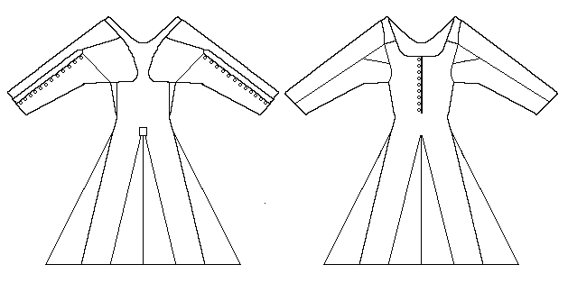

Drawing is based on a tracing of the garment made by Margaret Lannin of the National Museum of Ireland. Any errors are probably mine.
Drawing is based on a tracing of the garment made by Margaret
Lannin of the National Museum of Ireland. Any errors are probably
mine.

This garment was found in 1931 in the Moy Bog, County Clare, Ireland. It has never been published, except for a small section in Dunlevy. Therefore, there is not much information readily availableon this garment. What follows is based on the material in Dunlevy, and the (as yet) unpublished research of Kass McGann (historian@reconstructinghistory.com), personal communications, 18-21 June 1999). Ms. McGann's patience in sharing her work so that I might include it here has been exemplary. The gown has not been absolutely dated, although from the basic format of the shoulder and skirts suggests to me that a date between about 1350-1500 is plausible.
A long sleeved garment, it is presumed to have been a woman's although this is not proven (the body it was found with was said to have been that of a woman, however, how this determination was made is unknown). It has hip-high gores in front and back, and on the sides. The rear gore peaks have been covered by a small piece of fabric, probably used to strengthen the join, although whether this was part of the original design, or a later repair, is not known. The corresponding section of the front did not survive, so any comments would be speculative (the drawing above shows no such front patch merely as a convention since we don't know one way or another).
There are a number of buttons running up the back of each sleeve from the wrist to nearly the shoulder. They appear from the material that I have seen to be set about (1 1/2") part. This style is generally consistent with a few other Irish clothing finds (McClintock), and medieval depiction, although the buttons run further than the elbow, which seems to have been more common. These buttons appear to be made from wads of cloth, that is then covered in cloth, in a fashion consistent with other archaeological examples. The buttonholes are set closer to the edge of the garment with the buttons along the edge of the garment, again consistent with other 14th-15th century examples.
The "shoulder-blade" construction on the back of the gown is made up of two rounded squares, measuring approximately (8") on the inside edge, (8 3/8") on the top, (7 1/2") on the bottom and (6 1/2") where it meets the sleeve. A triangular gusset (2") on top, (6") on the outside and (5 3/4") on the inside sits adjacent to the squares under the arm at the side of the body. This narrow bit of material gives the top of the gown shape added to flare the garment where necessary. Another triangular gore, (3 1/2") on top, (4 1/2") towards the front and (4") on the side, is set into the armpit on the front-side of the seam.
Of the Bodice material that does survive, there are 4 1/2" of fabric on the left side (carrying 4 buttons) and 8 1/2" on the right (having 7 buttonholes). The shoulder straps that run over the shoulders and around to the back attach at the neckline. They are 2" wide at the bodice and 3/4" wide as they past over the shoulder. The neckline in front is rather low. From the shoulder ridge on the neckline, it is 12 1/2" around the curve of the neckline (it is 9 1/2" in a straight line).
Length from Shoulder to Waist (back-center): cm
(21")
Length from Neckline to Waist (back-center): (16")
Waist Circumference: cm (?)
Gore Length: (at least 24")
Armhole Circumference: (?)
Neck Circumference: (?)
Sleeve Length: (?)
McGann says that the fabric is 2/2 woven.
To quote from Dunlevy:
"A coarsely woven twill of lightly spun wool, and may have had some slight felting on the inner surface. It has a low round neckline, with the bodice buttoned at centre front and tight sleeves buttoned to underarms. The skirt is shaped with a double gore at centre back and at either side. The front of the skirt did not survive. This Moy gown is of interest since it shows the sewing techniques of the time. Selvedges were used when possible, otherwise the fabric edge was thickened to avoid ravelling. All seams were welted but the neckline was finished neatly with backstitch on the inner face and the bodice fronts were hemmed. The seams of the skirts were sometimes left unfinished towards the bottom, the lower edge of which is so fragmentary that it would be unwise to conjecture as to whether it was ankle or calf-length. The difficulties surmounted in accommodating the sleeves are of interest. The fabric was wrapped around the arm and cut to extend close to the neck. A welted seam attached this to the body of the gown and continued into the sleeve. In this way the weakness of a shoulder seam was avoided. For further strength the two foreparts of the bodice were cut with narrow straps which extended over the shoulders and into triangular gussets between the shoulder blades. A gusset was placed at the front of each armpit for ease of movement and comfort."
To see an attempt to reconstruct this garment, go here for mine, and here for Kass McGann's
Go to Tunic Page; Moy Bog Site Page
Some Clothing of the Middle Ages - Tunics - The Moy Bog Garment, by I. Marc Carlson, Copyright 1999. This code is given for the free exchange of information, provided the Author's Name is included in all future revisions, and no money change hands-